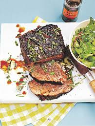
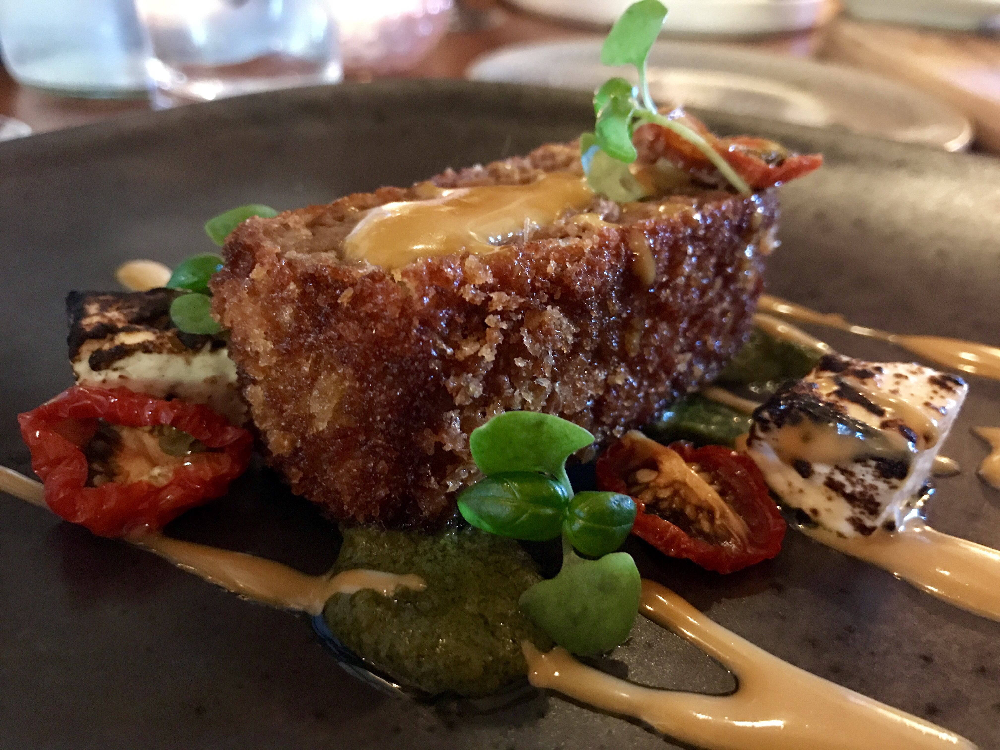
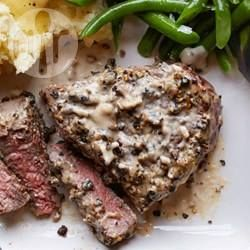

The day before, or at least a few hours before cooking, put all the ingredients in a large sandwich bag (pick and finely chop the rosemary first). Squeeze out the air then spend a few minutes massaging all the flavours into the meat. Put in the fridge for a few hours or overnight. About1½ hours before you’re ready to cook, remove the beef from the fridge and place in a cool corner of the kitchen to come up slowly to room temperature. Preheat your barbecue. Put a few knobs of chilled butter into a bowl of cold water and take those outside with you when you’re ready to cook. This next bit is going to be down to you and your intuition. What works for me every time is taking the fillet out of the bag, quickly patting it with kitchen paper then rolling it in olive oil and putting it on the hottest part of the barbecue to give it colour. Rub it with a chilled knob of butter as you cook it for about 8 to 10 minutes, turning every minute. Once it looks good, move the fillet to a cooler part of the barbecue to finish cooking to your liking. Another 4 to 5 minutes, turning every minute, should give you medium-done meat. If you like it medium rare, cook it for less, or more for well done. It’s better to err on the side of under-done. That way, the worst-case scenario is that you take the fillet off, slice into it and find that it’s under-cooked, then have to put it back. When you’re happy, put it on a platter, rub it again with butter so it really shines, then drizzle over more Worcestershire sauce, extra virgin olive oil, and thyme and rosemary flowers, if you have them.
  The Black & blushing Worcestershire fillet mouth watering at its best.Keep it drizziling and it'll keep your mouth drizzilled